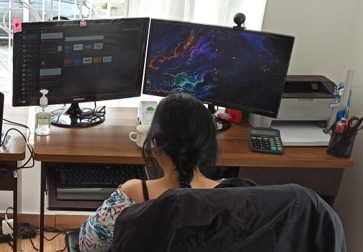

YESICA ANDREA LUGO LOPEZ
Estudiante Desarrollo de Software
E-mail: andrelugolopez@gmail.com
Celular: 322 584 76 76
Armenia, Quindio
Experiencia laboral

ATLANTICSOFT SAS
Auxiliar contable
Del 01/08/2018 al 31/12/2020
Tareas realizadas: elaboración de asientos contables,conciliación de bancos, realización de nómina y seguridad social, conciliación de cartera, manejo de bancos para realizar pagos, apoyo en áreas de administración.Cel: 316 849 04 77Armenia, Quindío
DROGUERIAS PROFAMILIAR
Asistente Administrativa
Del 01/10/2008 al 27/10/2009
Tareas realizadas: Apoyo en área de sistemas, atención al público, manejo de archivo, visita a las droguerías para verificar el cumplimiento en el sistema, realización de cuentas de cobro de instituciones, redacción de correspondencia, apoyo en inventario Tel: 746 51 00.Armenia, Quindío